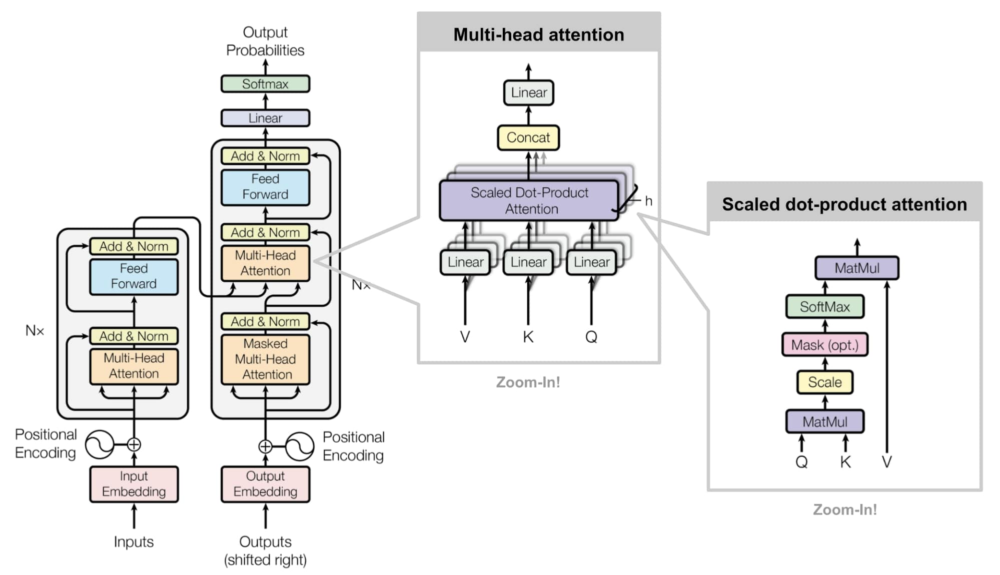

Attentions and Transformers
Attention has gotten plenty of attention lately, after yielding state of the art results in multiple fields of research. From image captioning and language translation to interactive question answering, the Transformer architecture has revolutionized how we approach machine learning problems. In this blog post, I'll dive deep into the mechanics of Transformers, focusing particularly on the self-attention mechanism that makes them so powerful.
The Rise of Transformers
Introduced in the groundbreaking 2017 paper "Attention Is All You Need" by Vaswani et al., the Transformer architecture has become the foundation for most state-of-the-art natural language processing models. Unlike previous sequence-to-sequence models that relied on recurrent neural networks (RNNs) or convolutional neural networks (CNNs), Transformers use attention mechanisms exclusively, allowing them to process all tokens in a sequence simultaneously rather than sequentially.
This parallelization not only speeds up training significantly but also allows the model to capture long-range dependencies in the data more effectively. Let's explore the key components that make Transformers work, starting with the embedding layer.
Embedding Layer: Turning Words into Vectors
Before any processing can happen, we need to convert discrete tokens (like words) into continuous vector spaces where mathematical operations are possible. The embedding layer does exactly this by mapping each token to a high-dimensional vector.
For a vocabulary of size $V$ and an embedding dimension $d_m$, we create an embedding matrix $E \in \mathbb{R}^{V \times d_m}$. Each row of this matrix represents the embedding vector for a token in our vocabulary. Formally, for a token $t$, its embedding is:
$$\text{Embedding}(t) = E[t] \in \mathbb{R}^{d_m}$$These embeddings are learned during training, gradually organizing the vector space so that semantically similar words end up close to each other.
Positional Encoding: Adding Sequential Information
Unlike RNNs, Transformers process all tokens in parallel, which means they have no inherent understanding of token order. To inject this crucial sequential information, we add positional encodings to the token embeddings.
The original Transformer paper uses sinusoidal functions to generate these positional encodings:
$$PE_{(pos, 2i)} = \sin\left(\frac{pos}{10000^{2i/d_m}}\right)$$ $$PE_{(pos, 2i+1)} = \cos\left(\frac{pos}{10000^{2i/d_m}}\right)$$Where $pos$ is the position of the token in the sequence and $i$ is the dimension. This creates a unique pattern for each position that the model can learn to interpret. The final input to the Transformer is then:
$$\text{Input} = \text{Embedding} + \text{PositionalEncoding}$$Self-Attention: The Heart of Transformers
Self-attention is the key innovation that makes Transformers so powerful. It allows each token in a sequence to attend to all other tokens, creating a rich contextual representation. Let's break down how it works, using the query, key, and value concept.
The Query, Key, Value Paradigm
In self-attention, each token generates three vectors:
- Query (Q): What the token is looking for
- Key (K): What the token offers as a match for queries
- Value (V): The actual information the token provides
These vectors are created by multiplying the input embeddings by three different learned weight matrices:
$$Q = X W^Q$$ $$K = X W^K$$ $$V = X W^V$$Where $X$ is the input embeddings matrix, and $W^Q, W^K, W^V \in \mathbb{R}^{d_m \times d_k}$ are the weight matrices ($d_k$ is typically $d_m/h$ where $h$ is the number of attention heads).
The YouTube Search Analogy
To understand self-attention intuitively, think about how YouTube's search function works:
When you search for a video on YouTube (your query), the platform compares your search terms against the metadata of all videos in its database (the keys). Videos with metadata closely matching your search query receive higher relevance scores. YouTube then returns the actual videos (the values) ranked by these relevance scores.
In self-attention, each token (word) in your sequence is doing something similar:
- It creates a query representing what contextual information it's looking for
- It compares this query against the keys of all tokens (including itself)
- It collects information from other tokens' values, weighted by how well their keys matched its query
This process allows each token to gather relevant information from the entire sequence, regardless of distance.
The Mathematics of Self-Attention
Formally, self-attention is computed as:
$$\text{Attention}(Q, K, V) = \text{softmax}\left(\frac{QK^T}{\sqrt{d_k}}\right)V$$Breaking this down step by step:
- Compute the dot product of query and key: $QK^T$
- Scale by $\sqrt{d_k}$: $\frac{QK^T}{\sqrt{d_k}}$
- Apply softmax to get attention weights: $\text{softmax}\left(\frac{QK^T}{\sqrt{d_k}}\right)$
- Multiply by values to get weighted sum: $\text{softmax}\left(\frac{QK^T}{\sqrt{d_k}}\right)V$
The Connection to Cosine Similarity
The dot product $QK^T$ is key to understanding self-attention. For two vectors $\vec{q}$ and $\vec{k}$, their dot product is:
$$\vec{q} \cdot \vec{k} = |\vec{q}||\vec{k}|\cos(\theta)$$Where $\theta$ is the angle between them. This is closely related to cosine similarity, which is defined as:
$$\text{cosine similarity}(\vec{q}, \vec{k}) = \frac{\vec{q} \cdot \vec{k}}{|\vec{q}||\vec{k}|} = \cos(\theta)$$The dot product in self-attention essentially measures how aligned or similar the query and key vectors are. The higher the dot product, the more attention one token pays to another.
But why do we scale by $\sqrt{d_k}$? As the dimension $d_k$ gets larger, the dot products grow in magnitude, potentially pushing the softmax function into regions with extremely small gradients. By scaling with $\sqrt{d_k}$, we keep the values in a reasonable range, ensuring stable gradients during training.
Multi-Head Attention: Attending from Multiple Perspectives
Rather than performing a single attention operation, Transformers use multi-head attention, which allows the model to jointly attend to information from different representation subspaces. Each head has its own set of learned query, key, and value projections:
$$\text{head}_i = \text{Attention}(XW_i^Q, XW_i^K, XW_i^V)$$The outputs from all heads are concatenated and linearly transformed:
$$\text{MultiHead}(X) = \text{Concat}(\text{head}_1, \text{head}_2, ..., \text{head}_h)W^O$$Where $W^O$ is another learned parameter matrix. With $h$ heads, typically each head's dimension $d_k = d_m / h$, so the total computation remains roughly constant.
Why Self-Attention Works So Well
Self-attention has several key advantages that contribute to its effectiveness:
- Global Context: Each token can directly attend to every other token, regardless of their distance in the sequence. This is a stark contrast to RNNs, where information must flow sequentially through all intermediate states.
- Parallelization: All attention calculations can happen simultaneously, allowing for efficient processing on modern hardware.
- Interpretability: The attention weights can be visualized to show which tokens are attending to which others, providing insights into how the model is processing the data.
- Flexibility: Self-attention can be applied to various data types beyond just text, including images, audio, and more.
Beyond the Basics: The Complete Transformer
While self-attention is the core innovation, a complete Transformer consists of several other components:
- Feed-Forward Networks: Each attention layer is followed by a position-wise feed-forward network, applying the same transformation to each position independently: $$\text{FFN}(x) = \max(0, xW_1 + b_1)W_2 + b_2$$
- Layer Normalization: Applied before each sub-layer to stabilize training
- Residual Connections: Around each sub-layer to help with gradient flow
- Encoder-Decoder Structure: For sequence-to-sequence tasks like translation
Conclusion
Transformers have fundamentally changed how we approach sequence modeling tasks. By replacing recurrence with self-attention, they've enabled models to process longer sequences more efficiently while capturing richer contextual information.
The query-key-value paradigm, inspired by information retrieval systems like search engines, provides an elegant framework for contextual understanding. And the mathematics behind it—rooted in concepts like dot products and cosine similarity—gives us insight into why these models work so well.
As Transformers continue to evolve and find applications in diverse domains, understanding their core mechanisms becomes increasingly valuable for anyone working in artificial intelligence and machine learning.
References
- Vaswani, A., Shazeer, N., Parmar, N., Uszkoreit, J., Jones, L., Gomez, A. N., Kaiser, L., & Polosukhin, I. (2017). Attention Is All You Need. Advances in Neural Information Processing Systems, 30.
- Devlin, J., Chang, M. W., Lee, K., & Toutanova, K. (2018). BERT: Pre-training of Deep Bidirectional Transformers for Language Understanding. arXiv preprint arXiv:1810.04805.